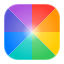

颜色助手
HEX 省略 #
颜色
图片色卡
UI 色卡
传统色
渐变色
收藏颜色
颜色
选择颜色
屏幕取色
色相
饱和度
明度
收藏
多色对比
＋ 添加比较色
收藏色板
参照色
图片色卡
打开图片
粘贴图片
拖入图片，或按 Ctrl+V 粘贴
提取颜色
颜色数量
3
4
5
6
7
8
9
10
11
12
收藏色板
像素取色
UI 色卡
Flat UI
Fluent Design
Open Color
Ant Design
Material Design
传统色
中国传统色
日本传统色
节气
全部节气
渐变色
＋ 自定义渐变
收藏颜色
全部
单色
色板
渐变
×
复制 HEX
在颜色页打开
加入对比
收藏
×
方向
复制 CSS
宽度 (px)
高度 (px)
下载 PNG
复制图片
收藏渐变